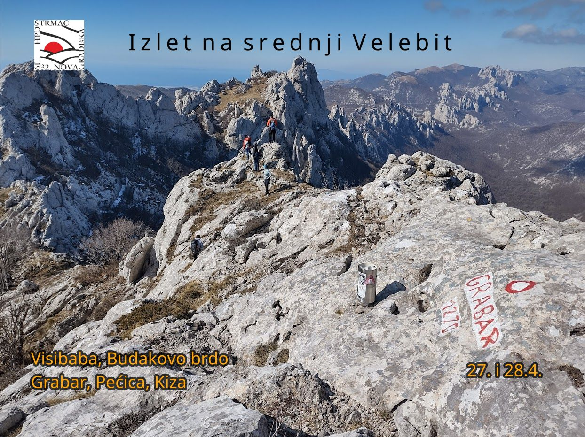

|
 HPD Strmac organizira izlet na srednji Velebit. Polazak u subotu 27.4. u 5h sa parkirališta Kauflanda. Očekivani povratak je u nedjelju u večernjim satima. Plan izleta:subota:Dabarske kosa - Visibaba - Budakovo brdo - Premužićeva staza - Dabarska kosa (6h) nedjelja:kamp Velebit - Stupačinovo - Grabar - Pećica - Kiza (tko hoće) - Kubus (5h) Potrebna oprema:
Težina izleta:kondicijski: 2 / 4 Prijevoz:autobusom Spavanje:u bungalovima u kampu Velebit Troškovi:
Prijavom na izlet sudionik potvrđuje da je upoznat sa zahtjevima izleta i da pristupa izletu na vlastitu odgovornost. Sudionik je dužan tijekom izleta slušati upute vodiča. U slučaju loših vremenskih prilika ili drugih nepredviđenih okolnosti, vodič ima pravo promijeniti rutu ili otkazati izlet. Krunoslav Malenica: 098 803 901 rikobik@gmail.com Uz prijavu je potrebno platiti akontaciju od 20€. Akontacija se može uplatiti na račun društva HR5023600001101876596 ili vodiču osobno. |